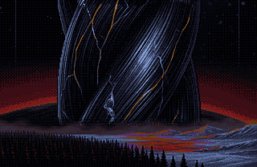
HalmハルムHalm
a glass forest over the grown cities of the Halmfolk, under a red dwarf
赤色矮星の下、ハルムの民が育てた街の上に広がるガラスの森
kızıl bir cücenin altında, Halm halkının büyüttüğü şehirlerin üstüne yayılmış camdan bir orman
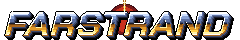
A HELIOBANE METROIDVANIA
Seven years after HELIOBANE, the roads between the stars have frozen into glass.
ヘリオベインから七年。星々を結ぶ道は、凍ってガラスになった。
HELIOBANE'den yedi yıl sonra, yıldızlar arasındaki yollar donup cama döndü.
Free demo coming to Steam
無料体験版、Steamで近日公開
Ücretsiz demo yakında Steam'de
Windows · macOS · Linux · Steam Deck
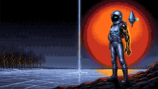
Trailer comingトレーラーは近日公開Fragman yakındaIn HELIOBANE a gunship flew into Aurel to kill what lived in it. Seven years on, Aurel is still going out and the Concord has about a century to empty its worlds. The only roads off them are the strands, the roads the hive grew between the stars. Cold now, they have turned to glass, and a road of glass still carries a ship.
ヘリオベインでは、一隻のガンシップがオーレルに飛び込み、そこに棲むものを殺しに行きました。七年後、オーレルはいまも消えかけていて、コンコードには世界を空にするための時間がおよそ百年しか残っていません。そこから出る道はストランドだけ。巣が星々のあいだに育てた道です。冷えたいま、道はガラスになりましたが、ガラスの道でも船は運べます。
HELIOBANE'de bir savaş gemisi, içinde yaşayanı öldürmek için Aurel'e daldı. Yedi yıl sonra Aurel hâlâ sönüyor ve Concord'un dünyalarını boşaltmak için yaklaşık bir yüzyılı var. Oradan çıkan tek yol iplikler: kovanın yıldızlar arasında büyüttüğü yollar. Soğuyunca cama döndüler, ama camdan bir yol da gemi taşır.
FARSTRAND is a different kind of game: you leave the cockpit for a survey suit and cross six worlds on foot, in a metroidvania built around a glass arm. You don't need to have played HELIOBANE. If you have, you'll know some faces, and you'll hear its radio in the strands.
FARSTRANDは、まったく違う種類のゲームです。コクピットを降りて測量服を着て、ガラスの腕を軸にしたメトロイドヴァニアで、六つの世界を自分の足で渡っていきます。ヘリオベインを遊んでいなくても大丈夫です。遊んだことがあるなら、知った顔に会い、ストランドの中にあの無線を聞くでしょう。
FARSTRAND bambaşka bir oyun: kokpitten inip keşif giysisini giyiyor, camdan bir kolun etrafında kurulmuş bir metroidvania'da altı dünyayı yürüyerek aşıyorsun. HELIOBANE'i oynamış olman gerekmiyor. Oynadıysan tanıdık yüzlerle karşılaşacak, ipliklerin içinde onun telsizini duyacaksın.
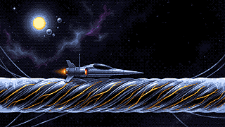
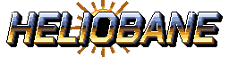
Umberflesh comes in three states: sunfed, flesh and glass. Quench takes a step of heat out, Kindle puts one back, and the arm holds only so much. Freeze an enemy and stand on it, or feed it until it bursts.
アンバーフレッシュには三つの状態があります。陽喰い、肉、ガラス。冷却は熱をひと段階抜き、点火はひと段階戻します。腕が抱えられる熱には限りがあります。敵を凍らせて上に立つか、与えすぎて破裂させるか。
Umberflesh üç halde bulunur: güneşbesili, et ve cam. Söndür bir basamak ısı alır, Tutuştur bir basamak geri koyar, kol da ancak bu kadarını tutar. Bir düşmanı dondur ve üstüne çık, ya da patlayana dek besle.
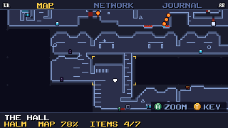
Hesper is a surveyor. Rooms are pencilled in as you enter them and inked when you rest at a beacon. The old marks scratched into the glass are the hint system, and you can turn them off.
ヘスパーは測量士です。部屋は入ると鉛筆書きで描かれ、ビーコンで休むとペン入れされます。ガラスに刻まれた古い印がヒントで、切ることもできます。
Hesper bir haritacı. Odalar girdiğinde kurşun kalemle çizilir, bir fenerde dinlendiğinde mürekkeplenir. Cama kazınmış eski işaretler ipucu sistemi; istersen kapatırsın.
Every screen was made at 1280×800 with a pad in hand: on a Steam Deck the 320×180 picture fills the screen at exactly four times size. Everything can be remapped.
すべての画面を、パッドを手に1280×800で作りました。Steam Deckでは320×180の画面がちょうど4倍で全面に映ります。すべて割り当て変更可能です。
Her ekran elde bir kumandayla, 1280×800'de tasarlandı: Steam Deck'te 320×180'lik görüntü ekranı tam dört kat büyüklükte doldurur. Her şey yeniden atanabilir.
One flesh enemy, the Graft and three pips of heat.
肉の敵がひとつ、接ぎ木、そして熱が三つ。
Etten bir düşman, Aşı ve üç ısı.
In the game, a frozen enemy thaws after five seconds, and a sunfed one cools after six.
ゲームでは、凍った敵は五秒で溶け、陽喰いの敵は六秒で冷めます。
Oyunda donmuş bir düşman beş saniyede çözülür, güneşbesili olan altı saniyede soğur.
Every survey beacon went silent at the same place, a tangle of strands the size of a moon that the Survey called the Knot. It is the hub, with a road out to each world.
すべての測量ビーコンは同じ場所で途絶えました。月ほどの大きさのストランドのもつれを、測量隊はノットと呼びました。ここがハブで、各世界へ道が一本ずつ延びています。
Bütün keşif fenerleri aynı yerde sustu: Keşif'in Düğüm dediği, ay büyüklüğünde bir iplik yumağı. Burası merkez; her dünyaya bir yol çıkar.

a glass forest over the grown cities of the Halmfolk, under a red dwarf
赤色矮星の下、ハルムの民が育てた街の上に広がるガラスの森
kızıl bir cücenin altında, Halm halkının büyüttüğü şehirlerin üstüne yayılmış camdan bir orman
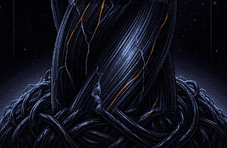
a Concord frigate hangs in the tangle, still playing its admiral's broadcast
もつれに挟まったコンコードのフリゲートが、いまも提督の放送を流し続けている
yumağa sıkışmış bir Concord fırkateyni, amiralinin yayınını hâlâ çalıyor
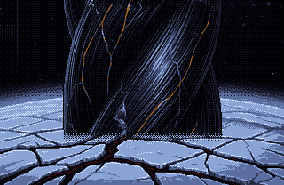
an ocean under a kilometre of ice, kept warm below by vents
一キロの氷の下の海。下では噴出孔が水を温めている
bir kilometre buzun altında, dipteki bacaların ısıttığı bir okyanus
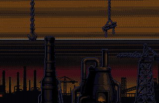
a moon of foundries that the hive wore like a shell
巣が殻のようにまとった、鋳造所の衛星
kovanın kabuk gibi giydiği, dökümhanelerle dolu bir ay
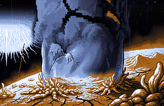
a hot world close to a white star, where everything is sunfed
白い恒星に近い灼熱の星。何もかもが陽喰い
beyaz bir yıldıza yakın, her şeyin güneşbesili olduğu sıcak bir dünya
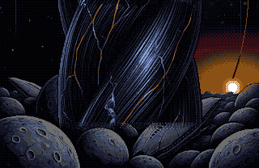
dead planets stacked under a young sun
若い太陽の下に積み重なった、死んだ惑星たち
genç bir güneşin altında üst üste yığılmış ölü gezegenler
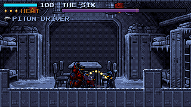
Each world keeps a Herald, a shepherd the hive grew there. Most slept through the cold. Something warm is waking them.
どの世界にも、巣がそこで育てた羊飼い、ヘラルドがいます。ほとんどは寒さの中で眠っていました。何か温かいものが、それを起こしています。
Her dünyanın bir Habercisi var, kovanın orada büyüttüğü bir çoban. Çoğu soğukta uyudu. Sıcak bir şey onları uyandırıyor.
rooted in the grove, glass limbs thawing and growing back when cut
林に根を張り、溶けかけたガラスの枝は切られても生え戻る
koruya kök salmış; eriyen cam dalları kesilince yeniden çıkar
what the hive made of Survey Six's crew of four, guns in every hand
第六測量隊の四人の乗員から巣が作ったもの。どの手にも銃
kovanın Altıncı Keşif'in dört kişilik ekibinden yaptığı şey; her elinde bir silah
a flesh eel in a flooded trench of vents
噴出孔の沈んだ海溝に棲む、肉のウナギ
bacalarla dolu, su basmış bir hendekte yaşayan etten bir yılan balığı
an assembly gantry on rails, plating over a sunfed heart
レールの上の組立クレーン。装甲の下に陽喰いの心臓
raylar üstünde bir montaj vinci; zırhın altında güneşbesili bir kalp
three figures who kindle everything they touch
触れるものすべてに火を灯す三つの人影
dokundukları her şeyi tutuşturan üç siluet
it tends the stacked dead planets and rings its bells
積み重なった死んだ惑星を世話し、鐘を鳴らす
yığılmış ölü gezegenlere bakar, çanlarını çalar
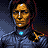
Hesper Lind, cartographer of Survey Seven, the Plumbline. She woke on Halm with her left arm gone at the shoulder and another in its place: black glass veined with dull gold. She calls it the Graft.
ヘスパー・リンド 第七測量隊プラムライン号の地図描き。ハルムで目覚めると左腕は肩からなく、代わりに鈍い金の筋が走る黒いガラスの腕がついていた。彼女はそれを接ぎ木と呼ぶ。
Hesper Lind, Yedinci Keşif'in, Plumbline'ın haritacısı. Halm'da uyandığında sol kolu omuzdan yoktu; yerinde soluk altın damarlı, kapkara camdan bir kol vardı. Ona Aşı diyor.
Bob, the Plumbline's survey drone, a steel teardrop shaped like a plumb bob. It finds hollow walls, flies through vents and presses switches. Its readout sometimes says a word. Usually NO.
ボブ プラムライン号の測量ドローン。測量用の錘の形をした鋼のしずく。空洞の壁を見つけ、通気口を抜け、スイッチを押す。小さな表示窓がたまに一語だけ出す。たいてい「NO.」。
Bob, Plumbline'ın keşif dronu, çekül biçiminde çelik bir damla. Boş duvarları bulur, deliklerden geçer, düğmelere basar. Küçük ekranı bazen tek bir kelime yazar. Genellikle NO.
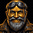
Old Mott, trader, keeps a stall in the Knot and turns up in other worlds, always somewhere you arrive second. He buys Aurum, sells patches and guns, calls Hesper kiddo, and won't say how he got there.
オールド・モット 商人。ノットに店を構え、ほかの世界にも現れる。いつも、あなたが二番目に着く場所に。オーラムを買い、パッチと銃を売り、ヘスパーを嬢ちゃんと呼ぶ。どうやって来たのかは言わない。
Yaşlı Mott, tüccar. Düğüm'de bir tezgâhı var ve başka dünyalarda da çıkar karşına, hep ikinci vardığın bir yerde. Aurum alır, yama ve silah satar, Hesper'e evlat der ve oraya nasıl geldiğini söylemez.
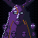
The Worn, whole peoples the hive ate and never finished digesting, still awake in the glass. They want the strands to stay cold. They help Hesper as far as that goes.
纏われし者 巣が食べて消化しきれなかった民そのもの。意識はいまもガラスの中で目覚めている。ストランドが冷たいままであることを望み、その限りでヘスパーを助ける。
Giyilmişler, kovanın yiyip de sindiremediği bütün halklar; zihinleri hâlâ camın içinde uyanık. İpliklerin soğuk kalmasını isterler ve Hesper'e o kadarına kadar yardım ederler.
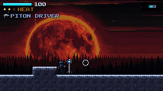
Halm, the glass forestハルム、ガラスの森Halm, cam orman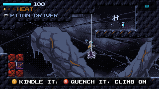
Kindle it, quench it, climb on点火して冷却、上に乗れTutuştur, söndür, üstüne çık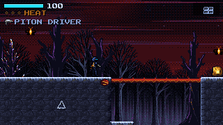
Halm, the chasm: a bud grown into a bridgeハルム、裂け目：芽を育てて橋にHalm, uçurum: tomurcuktan köprü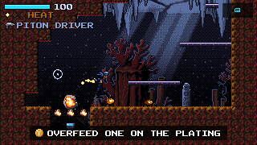
Verrin, the brood: overfeed one on the platingヴェリン、ブルード：装甲板の上のやつに過剰に与えろVerrin, Kuluçka: kaplamanın üstündekini aşırı besle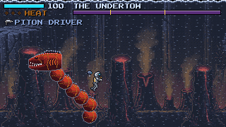
Verrin: the Undertowヴェリン：アンダートウVerrin: Çekinti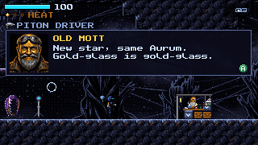
The Knot: Mott's stallノット：モットの店Düğüm: Mott'un tezgâhı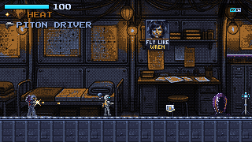
Sunder: the Alidadeサンダー：アリダード号Sunder: Alidad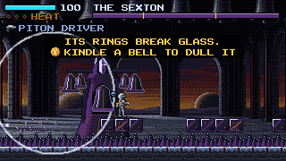
Ninth Light: the Sexton第九の光：墓守Dokuzuncu Işık: Zangoç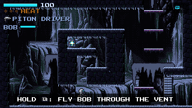
Bob in the vent通気口のボブBob havalandırmada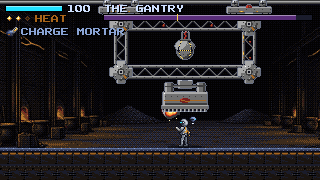
Carcanet, the Gantryカーカネット、ガントリーCarcanet, Gezer Vinç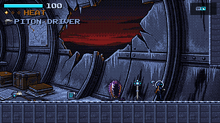
Ninth Light: the Baseline第九の光：ベースライン号Dokuzuncu Işık: Baseline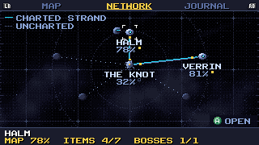
The network: Halm, the Knot, Verrin航路図：ハルム、ノット、ヴェリンAğ: Halm, Düğüm, VerrinSteamSteamSteamSteam HELIOBANEヘリオベインHELIOBANE Gand Games Press kitプレスキットBasın kiti PrivacyプライバシーGizlilik